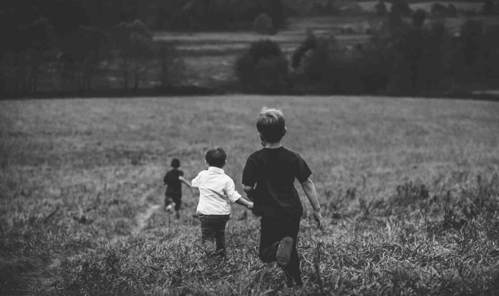

You arrive in a field that feels very familiar to you. You look up and see kids who you recognize as your friends. At first you're happy to see them again but then you remember... This is the day when they all left you behind because of what you did. A flood of regret begins to fill your head. What will you do?

keep going
go back